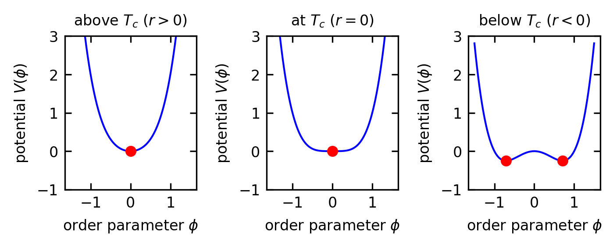
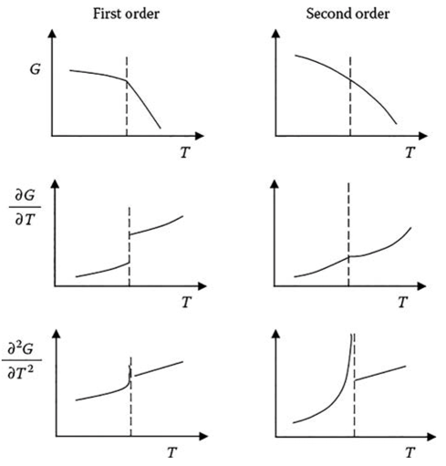
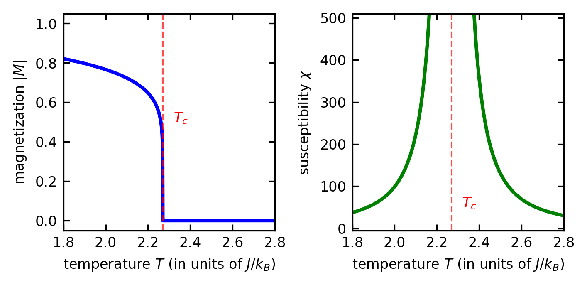
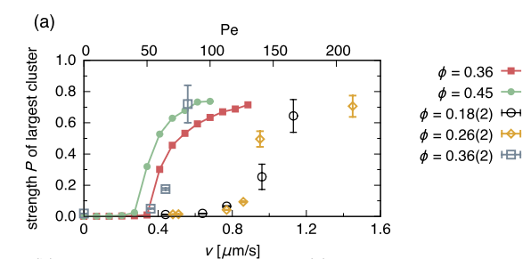
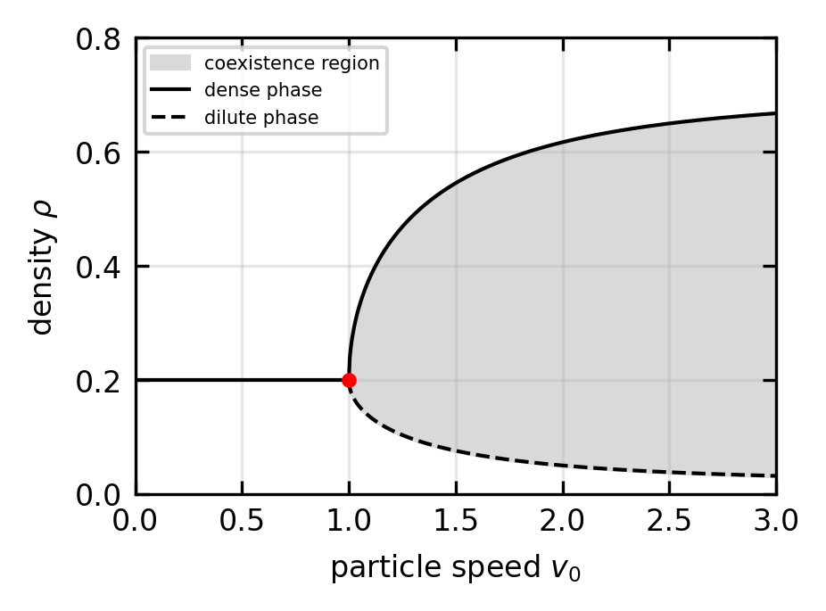
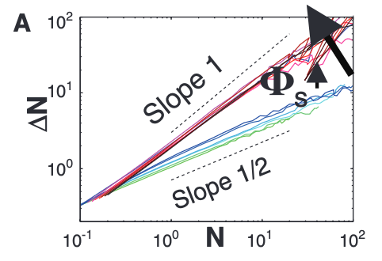

Phase Transitions and Motility-Induced Phase Separation
Equilibrium Phase Transitions: Fundamental Principles
Unlike the non-equilibrium phase separation phenomena we will discuss later, equilibrium phase transitions form the bedrock of conventional condensed matter physics. These transitions represent dramatic changes in the physical properties of a system when certain conditions, like temperature or pressure, are varied across a critical point. Phase transitions, whether in equilibrium systems or non-equilibrium active matter, are quintessential emergent phenomena where the collective interactions of enormous numbers of microscopic constituents produce entirely new states of matter with qualitatively different properties—properties that don’t exist at the microscopic level. During these transitions, we typically observe spontaneous symmetry breaking, where the system collectively “chooses” one of several equivalent states, creating order from disorder in a way that cannot be predicted from individual particle behavior. Perhaps most strikingly, systems with completely different microscopic details can exhibit identical critical behavior when they belong to the same universality class, demonstrating how macroscopic physics emerges independently of microscopic details. This non-reducibility often necessitates new theoretical frameworks that operate at higher levels of organization than the underlying microscopic laws.
Classification of Phase Transitions
Equilibrium phase transitions are traditionally classified using Ehrenfest’s approach, which focuses on the behavior of the free energy. The general expression for the Gibbs free energy is:
\[G(T,P) = H - TS = U + PV - TS\]
where \(H\) is enthalpy, \(T\) is temperature, \(S\) is entropy, \(U\) is internal energy, \(P\) is pressure, and \(V\) is volume.
First-order transitions show discontinuities in the first derivatives of the free energy. This manifests as jumps in quantities like volume (\(V = \partial G/\partial P\)) or entropy (\(S = -\partial G/\partial T\)), with familiar examples including water boiling or ice melting. These transitions involve latent heat and exhibit phase coexistence, where both phases can exist simultaneously.
In contrast, second-order (or continuous) transitions show continuous first derivatives but discontinuous second derivatives of the free energy. For example, the heat capacity \(C = -T \frac{\partial^2 G}{\partial T^2}\) may exhibit a discontinuity or divergence at the transition. These transitions are characterized by diverging correlation lengths and scale invariance near the critical point. The magnetization of a ferromagnet near its Curie temperature exemplifies this behavior, with free energy of the form
\[G(T,H) = G_0(T) - H M(T) - \frac{1}{2}\chi(T)H^2 + ...\],
where \(G(T,H)\) is the Gibbs free energy as a function of temperature \(T\) and magnetic field \(H\), \(G_0(T)\) is the field-independent part of the free energy, \(M(T)\) is the magnetization (the order parameter), \(\chi(T)\) is the magnetic susceptibility which measures how the magnetization responds to the applied field, and the susceptibility \(\chi(T)\) diverges at the critical point. Modern physics often simply distinguishes between discontinuous (first-order) and continuous transitions, with the latter revealing fascinating universal properties at the critical point.

Landau-Ginzburg Theory
Landau-Ginzburg theory offers an elegant approach to understanding continuous phase transitions through the concept of an order parameter \(\phi\), which distinguishes between different phases. For a magnet, this might be the magnetization; for a liquid-gas transition, it could be the density difference from the critical value.
The theory is built around a free energy functional:
\[F[\phi] = \int d^d\mathbf{r} \left[ \frac{1}{2}(\nabla\phi)^2 + V(\phi) \right]\]
where the first term \(\frac{1}{2}(\nabla\phi)^2\) represents the energy cost of spatial variations in the order parameter. This gradient term penalizes rapid changes in \(\phi\), reflecting the energetic cost of creating interfaces between different phases. Without this term, the system would fragment into microscopic domains; its presence ensures physically reasonable domain sizes and interface profiles.
The potential \(V(\phi)\) is typically expanded as a power series:
\[V(\phi) = r\phi^2 + u\phi^4 + \ldots\]
(Note: some texts write this as \(\frac{1}{2}r\phi^2 + \frac{1}{4}u\phi^4\); both conventions are in use, and the critical behavior is identical. The minima below \(T_c\) sit at \(\phi = \pm\sqrt{-r/(2u)}\) with the convention used here.)
These even power terms naturally appear in systems with up-down symmetry. For example, in ferromagnets, flipping all spins (\(\phi \to -\phi\)) shouldn’t change the energy. Similarly, in liquid-gas transitions, the potential depends on density fluctuations symmetrically around the critical density.
For systems without this symmetry, odd power terms can appear:
\[V(\phi) = r\phi^2 - h\phi + w\phi^3 + v\phi^4 + \ldots\]
This occurs in ferromagnets under external magnetic fields (the \(h\phi\) term) or in systems near a first-order phase transition (the \(w\phi^3\) term with \(v > 0\)), such as certain structural or metamagnetic transitions. A cubic term combined with a positive quartic coefficient generically drives the transition first-order by tilting one minimum below the other before \(r\) reaches zero.
What makes this formulation powerful is how the parameter \(r\) varies with temperature: \(r \propto (T-T_c)\). When temperature exceeds the critical temperature (\(T > T_c\)), the free energy minimum occurs at \(\phi = 0\), corresponding to the disordered phase. Below the critical temperature (\(T < T_c\)), the minima shift to non-zero values of \(\phi\), representing the ordered phase.
Code
fig, (ax1, ax_critical, ax2) = plt.subplots(1, 3, figsize=get_size(12, 5))
phi = np.linspace(-1.5, 1.5, 1000)
# Above Tc (r > 0)
r = 1.0
u = 1.0
V_above = r * phi**2 + u * phi**4
ax1.plot(phi, V_above, 'b-')
ax1.set_title('above $T_c$ ($r > 0$)')
ax1.set_xlabel('order parameter $\\phi$')
ax1.set_ylabel('potential $V(\\phi)$')
ax1.set_ylim(-1, 3)
ax1.plot(0, 0, 'ro', markersize=5) # Mark the minimum
# At Tc (r = 0)
r = 0.0
u = 1.0
V_critical = r * phi**2 + u * phi**4
ax_critical.plot(phi, V_critical, 'b-')
ax_critical.set_title('at $T_c$ ($r = 0$)')
ax_critical.set_xlabel('order parameter $\\phi$')
ax_critical.set_ylabel('potential $V(\\phi)$')
ax_critical.set_ylim(-1, 3)
ax_critical.plot(0, 0, 'ro', markersize=5) # Mark the minimum
# Below Tc (r < 0)
r = -1.0
u = 1.0
V_below = r * phi**2 + u * phi**4
ax2.plot(phi, V_below, 'b-')
ax2.set_title('below $T_c$ ($r < 0$)')
ax2.set_xlabel('order parameter $\\phi$')
ax2.set_ylabel('potential $V(\\phi)$')
ax2.set_ylim(-1, 3)
# Mark the minima
phi_min = np.sqrt(-r/(2*u))
V_min = r * phi_min**2 + u * phi_min**4
ax2.plot(phi_min, V_min, 'ro', markersize=5)
ax2.plot(-phi_min, V_min, 'ro', markersize=5)
plt.tight_layout()
plt.show()The system naturally evolves toward states that minimize this free energy, following the Euler-Lagrange equation:
\[-\nabla^2\phi + \frac{\partial V}{\partial \phi} = 0\]
Near the critical point, the system exhibits remarkable scaling behaviors that define its critical properties. Let’s explore these key behaviors in more detail:
Correlation Length (\(\xi\)): This measures how far the influence of one microscopic variable extends to others. Mathematically, it can be calculated from the spatial correlation function \(G(r) = \langle \phi(0) \phi(r) \rangle - \langle \phi \rangle^2\), which typically decays exponentially as \(G(r) \sim e^{-r/\xi}\) away from the critical point. Near the critical point, it diverges according to \(\xi \sim |T-T_c|^{-\nu}\), meaning fluctuations become correlated over macroscopic distances.
Order Parameter (\(\phi\)): This quantity distinguishes between phases - like magnetization in magnets or density difference in fluids. It scales as \(\phi \sim |T-T_c|^{\beta}\) below \(T_c\), gradually vanishing as temperature approaches the critical point.
Susceptibility (\(\chi\)): This measures how responsive the system is to external fields (like magnetic susceptibility). It diverges as \(\chi \sim |T-T_c|^{-\gamma}\), indicating the system becomes extremely sensitive to small perturbations.
Specific Heat (\(C\)): This thermodynamic quantity shows how much energy is needed to raise the temperature, scaling as \(C \sim |T-T_c|^{-\alpha}\).
These power laws are characterized by critical exponents (\(\alpha\), \(\beta\), \(\gamma\), \(\nu\)) that aren’t independent but satisfy scaling relations such as \(\alpha + 2\beta + \gamma = 2\) and the hyperscaling relation \(\nu d = 2 - \alpha\) (where \(d\) is the spatial dimension). These relations emerge from the fundamental scaling properties of the free energy. Note that the hyperscaling relation \(\nu d = 2 - \alpha\) holds only below the upper critical dimension \(d_c\) (for the Ising universality class, \(d_c = 4\)); above \(d_c\) mean-field theory applies and hyperscaling breaks down.
Universality
Perhaps the most remarkable aspect of phase transitions is universality. Seemingly different physical systems—like magnets, fluids, or alloys—can exhibit identical critical behavior if they share the same symmetries and dimensionality. This universality is reflected in matching sets of critical exponents, regardless of microscopic details.
The Ising Model
The Ising model provides perhaps the simplest theoretical framework exhibiting a continuous second order phase transition:
\[H = -J\sum_{\langle i,j \rangle} \sigma_i \sigma_j - h\sum_i \sigma_i\]
Where \(\sigma_i = \pm 1\) represents a spin at site \(i\), \(J\) is the coupling constant, and \(h\) is an external field. The model describes a ferromagnetic transition with order parameter \(M = \frac{1}{N}\sum_i \sigma_i\) (the magnetization).
The Ising model has been realized experimentally in various magnetic systems:
- Uniaxial ferromagnets such as DyAlO\(_3\) demonstrate critical behavior closely matching 3D Ising model predictions
- Thin films of ferromagnetic materials often exhibit 2D Ising behavior
- CoNb\(_2\)O\(_6\) (cobalt niobate) provides a rare example of a 1D Ising system
The 2D Ising model was solved analytically by Onsager, revealing a critical temperature \(T_c = \frac{2J}{k_B\ln(1+\sqrt{2})}\) and critical exponents: \(\beta = 1/8\), \(\gamma = 7/4\), and \(\nu = 1\). The specific heat exponent is \(\alpha = 0\), but this does not mean the specific heat is finite at \(T_c\); instead it signals a logarithmic divergence \(C \sim \ln|T-T_c|\), qualitatively different from the power-law divergence (\(\alpha > 0\)) or the jump discontinuity (\(\alpha = 0\) in mean-field theory).
Code
# Plot the susceptibility and order parameter for the 2D Ising model
fig, (ax1, ax2) = plt.subplots(1, 2, figsize=get_size(12, 6))
# Temperature range (normalized by J/k_B)
T = np.linspace(1.8, 2.8, 1000)
T_c = 2.27 # Critical temperature for 2D Ising model
# Order parameter (magnetization) with critical exponent beta = 1/8
m = np.zeros_like(T)
beta = 1/8
for i, t in enumerate(T):
if t < T_c:
m[i] = (1 - t/T_c) ** beta
else:
m[i] = 0
# Susceptibility with critical exponent gamma = 7/4
chi = np.zeros_like(T)
gamma = 7/4
A = 10 # Amplitude factor for visualization
for i, t in enumerate(T):
if abs(t - T_c) < 0.001: # Avoid division by zero at critical point
chi[i] = A * 100 # Large but finite value at critical point
else:
chi[i] = A * (1/abs(t - T_c))**gamma
if chi[i] > A * 100: # Cap the maximum value for better visualization
chi[i] = A * 100
# Plot order parameter (magnetization)
ax1.plot(T, m, 'b-', lw=2)
ax1.set_xlabel('temperature $T$ (in units of $J/k_B$)')
ax1.set_ylabel('magnetization $|M|$')
ax1.axvline(x=T_c, color='r', linestyle='--', alpha=0.7)
ax1.text(T_c+0.05, 0.5, '$T_c$', color='r')
ax1.set_xlim(1.8, 2.8)
ax1.set_ylim(-0.05, 1.05)
# Plot susceptibility
ax2.plot(T, chi, 'g-', lw=2)
ax2.set_xlabel('temperature $T$ (in units of $J/k_B$)')
ax2.set_ylabel('susceptibility $\\chi$')
ax2.axvline(x=T_c, color='r', linestyle='--', alpha=0.7)
ax2.text(T_c+0.05, 50, '$T_c$', color='r')
ax2.set_xlim(1.8, 2.8)
ax2.set_ylim(-5, 510)
plt.tight_layout()
plt.show()
Ising Model Simulation
Below is an interactive simulation of the Ising model that allows you to explore phase transitions by adjusting key parameters. The simulation visualizes the spin configurations in real-time, demonstrating how the system behavior changes across the critical temperature.
Magnetization: 0
Energy: 0
Critical temperature (2D Ising): Tc ≈ 2.27J/kB
This interactive simulation allows you to explore the Ising model’s phase transition by adjusting three key parameters:
Temperature (T/J): Control thermal fluctuations. Notice how the system organizes into ordered domains below the critical temperature (\(T_c ≈ 2.27\)) and becomes increasingly disordered above it.
Magnetic Field (h/J): Apply an external field that biases spins. At strong fields, the system magnetizes regardless of temperature.
Coupling Strength (J): Adjust the interaction strength between neighboring spins. Higher values promote stronger ordering.
The simulation uses the Metropolis algorithm to sample configurations according to the Boltzmann distribution. The visualization shows spin states (black = up, gray = down) updating in real-time, while displaying the current magnetization and energy of the system.
Try setting the temperature near the critical point (\(T ≈ 2.27\)) and observe the large, fluctuating domains characteristic of critical phenomena. This behavior illustrates the diverging correlation length and enhanced fluctuations discussed in the Ising model section.
Motility Induced Phase Separation
When active particles are experimentally realized from colloidal systems, they can exhibit dynamical clustering phenomena such as display in the movie below and in a number of other studies.
The generic mechanism of this clustering has been termed Motility Induced Phase Separation (MIPS) and describes the spontaneous segregation of self-propelled particles into dense and dilute phases, occurring without any attractive interactions between particles. This counterintuitive phenomenon emerges purely from the interplay between self-propulsion and steric hindrance. It carries signatures of a phase transition when the control parameter, i.e. the speed of the active particles is varied.

The central mechanism of MIPS can be understood through a feedback loop: active particles move slower in crowded regions due to collisions, leading to their accumulation, which further increases local density. This positive feedback mechanism drives phase separation even with purely repulsive interactions—a stark departure from equilibrium phase transitions that typically require attractive forces.
In real experimental systems, the actual active particle interactions are not completely free of additional forces other than steric forces, though the principle phenomenon of MIPS is to some extent preserved.
Mathematical Description
At the microscopic level, MIPS is typically modeled using Active Brownian Particles (ABPs) or even discs with excluded volume interactions. These particles follow dynamics governed by:
\[\dot{\mathbf{r}}_i = v_0 \mathbf{n}_i + \mu \sum_{j \neq i} \mathbf{F}_{ij} + \sqrt{2D_t} \boldsymbol{\xi}_i(t)\]
\[\dot{\theta}_i = \sqrt{2D_r} \eta_i(t)\]
In these equations, \(\mathbf{r}_i\) represents the position of particle \(i\), and \(\mathbf{n}_i = (\cos\theta_i, \sin\theta_i)\) is its orientation unit vector. The equation includes self-propulsion with speed \(v_0\), repulsive interactions \(\mathbf{F}_{ij}\) between particles, and translational diffusion with coefficient \(D_t\) and Gaussian white noise \(\boldsymbol{\xi}_i(t)\). The particle’s orientation evolves through rotational diffusion with coefficient \(D_r = 1/\tau_p\).
The key feedback mechanism in MIPS arises from how particle speed effectively decreases in crowded regions. While \(v_0\) is constant in the equation, actual displacement reduces due to collisions. This can be captured by defining a density-dependent effective speed:
\[v_\text{eff}(\rho) = v_0 \cdot f(\rho)\]
where \(f(\rho)\) decreases with local density \(\rho\), commonly expressed as:
\[f(\rho) = (1 - \rho/\rho_{max})^\alpha\]
with \(\alpha > 0\). This establishes the crucial coupling between motility and density that drives MIPS. Later, we will explore a continuum description that more directly illuminates how this feedback mechanism leads to phase separation.
MIPS Simulation
Below is an interactive simulation of Motility-Induced Phase Separation (MIPS) that demonstrates how self-propelled particles can spontaneously form dense clusters without any attractive interactions. The key parameters you can adjust are:
Filling Fraction: Controls the density of particles in the system. Higher values promote clustering.
Orientational Noise: Determines how randomly particles change their direction. Low noise allows particles to move persistently, facilitating phase separation.
Particle Speed: Sets how quickly particles move. Higher speeds typically enhance phase separation.
Attraction Strength: An additional sttraction between the particles due to phoretic fields, for example
Cluster Count: 0
Largest Cluster: 0%
Phase Separation: No
Continuum Theory
A more direct understanding of MIPS can also be obtained with the help of continuum theories such as a hydrodynamic approach that couples the density field \(\rho\) with a polarization field \(\mathbf{P}\):
\[\partial_t \rho = -\nabla \cdot \mathbf{J}\] \[\mathbf{J} = v(\rho)\mathbf{P} - D_t\nabla\rho\] \[\partial_t \mathbf{P} = -D_r \mathbf{P} - \frac{1}{d}\nabla\bigl[v(\rho)\rho\bigr] + \text{higher order terms}\]
Here \(\mathbf{P}\) is the polarization density (the coarse-grained mean orientation field), and the diffusive term \(-D_t\nabla\rho\) in the flux accounts for translational Brownian motion. The density-gradient term \(-\frac{1}{d}\nabla[v(\rho)\rho]\) in the polarization equation is essential: it couples the local swim speed to density gradients and is the term responsible for the MIPS instability.
The density-dependent swim speed \(v(\rho)\) explicitly shows the speed-density coupling and creates the feedback loop driving MIPS:
\[v(\rho) = v_0(1-\rho/\rho_c)\]
Let’s examine the feedback loop that drives MIPS using a simple, intuitive approach. The key physics can be understood through a direct cause-and-effect chain:
Slow-down in dense regions: Active particles move more slowly in regions of higher density due to more frequent collisions. This is captured by the relation \(v(\rho) = v_0(1-\rho/\rho_c)\), where speed decreases as density increases.
Particle accumulation: When particles move from a low-density to a high-density region, they slow down. This means particles spend more time in dense regions than in dilute ones, naturally leading to further accumulation where density is already high.
Positive feedback: This accumulation further increases the local density, causing even more slowing and even more accumulation - creating a positive feedback loop.
To see how this works mathematically, consider a simple 1D system with a small density gradient. The particle flux is:
\[J = v(\rho)\rho = v_0(1-\rho/\rho_c)\rho\]
Taking the derivative with respect to density:
\[\frac{dJ}{d\rho} = v_0(1-\rho/\rho_c) - v_0\rho/\rho_c = v_0(1-2\rho/\rho_c)\]
This derivative is the effective advection speed for density perturbations. When \(dJ/d\rho > 0\) (low density, \(\rho < \rho_c/2\)), a local density increase raises the outward flux, so the excess density is carried away – the perturbation decays, and the system is stable. When \(dJ/d\rho < 0\) (high density, \(\rho > \rho_c/2\)), a local density increase reduces the outward flux, so particles accumulate further rather than dispersing. This is the hallmark of instability: density perturbations grow rather than relax, because the active flux effectively acts as a negative diffusivity.
We can directly see this by writing the continuity equation:
\[\partial_t\rho = -\nabla \cdot J = -\nabla \cdot [v_0(1-\rho/\rho_c)\rho]\]
Expanding this in 1D:
\[\partial_t\rho = -\frac{\partial}{\partial x}[v_0(1-\rho/\rho_c)\rho]\]
\[\partial_t\rho = -v_0\frac{\partial}{\partial x}[\rho - \rho^2/\rho_c]\]
\[\partial_t\rho = -v_0\frac{\partial \rho}{\partial x} + \frac{v_0}{\rho_c}\frac{\partial}{\partial x}[\rho^2]\]
The first term is just advection, but the second term can be rewritten as:
\[\partial_t\rho = -v_0\frac{\partial \rho}{\partial x} + \frac{2v_0}{\rho_c}\rho\frac{\partial \rho}{\partial x}\]
Rearranging:
\[\partial_t\rho = v_0(2\rho/\rho_c - 1)\frac{\partial \rho}{\partial x}\]
This equation reveals the instability directly. When \(\rho > \rho_c/2\), the coefficient of the gradient term becomes positive, meaning that density increases in the direction of increasing density - exactly the opposite of regular diffusion. This “anti-diffusion” behavior is the mathematical expression of our intuitive feedback loop.
The critical density for instability is \(\rho_{critical} = \rho_c/2\), which is exactly what more complex analyses using Fourier modes would find. Any small density fluctuation above this threshold will grow rather than decay, leading to phase separation.
This simple derivation captures the essential physics of MIPS: the feedback between density and motility creates regions where particles effectively move up concentration gradients rather than down, driving spontaneous phase separation even without attractive interactions between particles.
Incorporating Brownian Motion
To develop a more complete picture of MIPS, we need to incorporate rotational diffusion explicitly. Recall that active particles undergo rotational Brownian motion described by:
\[\dot{\theta}_i = \sqrt{2D_r} \eta_i(t)\]
where \(D_r\) is the rotational diffusion coefficient and \(\eta_i(t)\) is Gaussian white noise.
This rotational diffusion leads to a persistence time \(\tau_p = 1/D_r\), which is the characteristic time over which a particle maintains its direction before randomizing. This timescale critically affects the development of MIPS.
To incorporate this effect mathematically, we need to extend our continuum model to include both translational and rotational diffusion. Starting from the particle flux:
\[J = v(\rho)\rho = v_0(1-\rho/\rho_c)\rho\]
We add a diffusion term that accounts for both translational diffusion (\(D_t\)) and effective diffusion from rotational motion:
\[J = v_0(1-\rho/\rho_c)\rho - D_\text{eff} \nabla \rho\]
where \(D_\text{eff} = D_t + v_0^2/(2dD_r)\) for a \(d\)-dimensional system. The second term captures how particles effectively diffuse due to their persistent random motion, with persistence length \(l_p = v_0\tau_p\). The persistence time is \(\tau_p = 1/D_r\) in 2D (where the orientational correlation decays as \(e^{-D_r t}\)) and \(\tau_p = 1/(2D_r)\) in 3D, so the formula for \(D_\text{eff}\) already absorbs the correct \(d\)-dependence.
Now our continuity equation becomes:
\[\partial_t\rho = -\nabla \cdot [v_0(1-\rho/\rho_c)\rho] + \nabla \cdot (D_\text{eff} \nabla \rho)\]
Expanding in 1D:
\[\partial_t\rho = -v_0\frac{\partial}{\partial x}[\rho - \rho^2/\rho_c] + D_\text{eff}\frac{\partial^2 \rho}{\partial x^2}\]
\[\partial_t\rho = -v_0\frac{\partial \rho}{\partial x} + \frac{v_0}{\rho_c}\frac{\partial}{\partial x}[\rho^2] + D_\text{eff}\frac{\partial^2 \rho}{\partial x^2}\]
Rearranging:
\[\partial_t\rho = v_0(2\rho/\rho_c - 1)\frac{\partial \rho}{\partial x} + D_\text{eff}\frac{\partial^2 \rho}{\partial x^2}\]
This equation now contains two competing effects: the “anti-diffusion” term that drives phase separation when \(\rho > \rho_c/2\), and the effective diffusion term that works to homogenize the system. Phase separation occurs when the anti-diffusion overcomes the regularizing effect of diffusion.
A stability analysis shows that the critical condition for MIPS becomes:
\[\frac{v_0^2}{D_\text{eff} D_r} > \frac{4\rho_c}{\rho(\rho_c-\rho)}\]
This reveals that MIPS requires a sufficiently large ratio of self-propulsion to diffusion, commonly expressed through the Péclet number Pe = \(v_0/(\sigma D_r)\), where \(\sigma\) is the particle size. Specifically, the system phase separates when:
- The density is in the appropriate range: \(\rho < \rho_c\)
- The Péclet number exceeds a critical value that depends on density
- The rotational diffusion \(D_r\) is sufficiently low to allow persistent motion
When all of these parameters exceed their critical values, the feedback mechanism between density and mobility becomes sufficiently strong to induce phase separation. At high Péclet numbers, particles move persistently along their orientation before randomizing, creating density fluctuations that can trigger the instability. Similarly, when the density surpasses a threshold value, the motility reduction in crowded regions becomes pronounced enough to sustain the positive feedback loop.
The phase separation behavior is captured in the binodal curve shown in the phase diagram above, which separates the homogeneous phase from the phase-separated region. The system exhibits a critical point where the distinction between phases vanishes, similar to equilibrium phase transitions. The universality class of the MIPS critical point is an open and actively debated question. Several numerical studies find exponents close to mean-field values (\(\beta \approx 0.5\), \(\gamma \approx 1.0\), \(\nu \approx 0.5\)), while others report Ising-like exponents in two dimensions. The difficulty is that finite-size effects and slow dynamics near the critical point make it hard to extract reliable exponents from simulations or experiments, and it remains unclear whether MIPS belongs to the Ising universality class, a new non-equilibrium class, or displays effective mean-field behavior due to long-ranged fluctuations. What is certain is that MIPS is a non-equilibrium phase transition driven by activity rather than thermodynamic interactions.
Code
v_c = 1.0 # Critical speed
rho_c = 0.2 # Critical density
speed_range = np.linspace(0, 3, 1000)
max_density = 0.7
# Generate binodal curve
def binodal(v, v_c, rho_c, max_density):
if v <= v_c:
return np.array([rho_c]) # Just critical density below v_c
else:
# Calculate high and low density branches
delta = 0.6 * np.sqrt((v-v_c)/v_c) # Simplified model
high_density = min(rho_c + delta, max_density)
low_density = max(rho_c - delta, 0.05)
return np.array([low_density, high_density]) # Return BOTH phases
# Create figure
plt.figure(figsize=get_size(8, 6))
# Plot intensity map showing density distribution
mesh_v, mesh_rho = np.meshgrid(
speed_range,
np.linspace(0, max_density, 200)
)
intensity = np.zeros_like(mesh_v)
for i, v in enumerate(speed_range):
densities = binodal(v, v_c, rho_c, max_density)
if len(densities) == 1: # Homogeneous phase
idx = np.argmin(np.abs(np.linspace(0, max_density, 200) - densities[0]))
intensity[idx, i] = 1.0
else: # Phase separated - fill the coexistence region
low_idx = np.argmin(np.abs(np.linspace(0, max_density, 200) - densities[0]))
high_idx = np.argmin(np.abs(np.linspace(0, max_density, 200) - densities[1]))
intensity[low_idx:high_idx+1, i] = 0.5 # Fill the region between branches
# Smooth the intensity for visualization
# Plot binodal line
binodal_points = []
for v in speed_range:
densities = binodal(v, v_c, rho_c, max_density)
for d in densities:
binodal_points.append([v, d])
binodal_points = np.array(binodal_points)
# Only plot the high density branch
mask_low = binodal_points[:, 1] <= rho_c
mask_high = binodal_points[:, 1] >= rho_c
plt.plot(binodal_points[mask_high, 0], binodal_points[mask_high, 1], 'k-', lw=1, label='High density')
plt.plot(binodal_points[mask_low, 0], binodal_points[mask_low, 1], 'k-', lw=1, label='Low density')
# Add critical point
plt.plot(v_c, rho_c, 'ro', markersize=3)
# Labels and title
plt.xlabel('particle speed $v_0$')
plt.ylabel('density $\\rho$')
plt.xlim(0, 3)
plt.ylim(0, 1)
plt.tight_layout()
plt.grid(alpha=0.3)
plt.show()
Several key features become evident from the binodal curve shown above, which separates the homogeneous region from the phase-separated region. These features include:
Critical Point: At a critical speed \(v_c\) and density \(\rho_c\), the system undergoes a continuous phase transition.
Binodal Curve: Above \(v_c\), the system separates into coexisting phases with densities following the binodal branches.
Coexistence Region: Between the binodal branches, the system separates into regions of high and low density.
This behavior parallels liquid-gas phase transitions in equilibrium systems, but with particle speed rather than temperature serving as the control parameter. The key difference is that MIPS arises purely from the feedback between local density and particle mobility, without requiring attractive interactions.
Number density fluctuations in equilibrium
In equilibrium systems, number density fluctuations follow a characteristic scaling law that serves as a fundamental signature of thermodynamic equilibrium. This behavior emerges directly from the central limit theorem of statistics. When we observe a subsystem containing an average of \(N\) particles, the particles are either statistically independent (in non-interacting systems) or exhibit only short-range correlations. As a result, counting particles in this volume effectively sums many weakly correlated random variables.
The central limit theorem tells us that such a sum produces fluctuations with a variance that scales linearly with the system size:
\[\langle(\delta N)^2\rangle \propto \langle N\rangle\]
This means the standard deviation of these fluctuations scales as \(\sqrt{\langle N\rangle}\). When we examine relative fluctuations—the ratio of fluctuation magnitude to the mean—we find they scale as
\[\delta N/\langle N\rangle \propto 1/\sqrt{\langle N\rangle}\]
This \(1/\sqrt{N}\) scaling holds across equilibrium systems away from any critical point, appearing in ideal gases, liquids, and even interacting solids. It reflects the absence of long-range correlations that would otherwise amplify fluctuations beyond this scaling.
It is important to be precise here, because the \(\sqrt{N}\) law is not universal: it breaks down at a classical critical point. Statistical mechanics relates the number fluctuations exactly to the isothermal compressibility \(\kappa_T\),
\[\frac{\langle(\delta N)^2\rangle}{\langle N\rangle} = \rho\, k_B T\, \kappa_T\]
Away from \(T_c\) the compressibility is finite, so the variance is linear in \(\langle N\rangle\) and we recover \(\delta N/\langle N\rangle \propto 1/\sqrt{\langle N\rangle}\). But on approaching a critical point, \(\kappa_T\) diverges (this is the flat free-energy minimum at \(r = 0\) from Landau theory), the correlation length \(\xi\) grows without bound, and the number fluctuations become anomalously large and correlated over macroscopic distances. This is exactly the phenomenon of critical opalescence: a classical, equilibrium system also exhibits giant density fluctuations, but only when it is fine-tuned to its critical point.
Number density fluctuations in MIPS
Active systems exhibiting Motility-Induced Phase Separation (MIPS) demonstrate a profound departure from this equilibrium behavior. In these systems, the self-propulsion of particles creates persistent motion and induces spatial correlations that extend far beyond what’s possible in equilibrium.
The most striking manifestation of this non-equilibrium nature appears in the density fluctuations. Rather than following the equilibrium \(1/\sqrt{N}\) scaling, active systems show “giant number fluctuations” where the standard deviation scales as
\[\Delta N \propto \langle N\rangle^{a}\]
with \(a > 1/2\) (equivalently, the variance \(\langle(\delta N)^2\rangle \propto \langle N\rangle^{2a}\) grows faster than linearly). The equilibrium central-limit value is \(a = 1/2\). This super-linear scaling means that relative fluctuations actually grow with system size rather than diminish.

This anomalous behavior stems from the long-range correlations that activity creates between particle positions and velocities. As particles cluster in MIPS, they don’t distribute randomly but rather organize collectively in response to local density gradients, amplifying density variations instead of smoothing them out.
The sharper distinction from equilibrium is therefore not simply that active systems show large fluctuations, since classical systems do too at their critical point. It is that active systems exhibit these anomalous fluctuations throughout an extended region of parameter space rather than only at a single fine-tuned critical point. Activity sustains the long-range correlations generically, without the need to tune temperature or density to a critical value.
This difference in number fluctuation scaling provides researchers with a powerful experimental signature to distinguish active from passive phase separation, even without tracking individual particle trajectories. By measuring how density fluctuations scale with system size, one can immediately identify the non-equilibrium character of active matter systems, revealing one of the clearest manifestations of their departure from equilibrium physics.
MIPS exemplifies several profound concepts in non-equilibrium statistical mechanics:
Emergent Thermodynamics: Despite being driven by non-equilibrium processes, MIPS exhibits phase coexistence reminiscent of equilibrium systems. This suggests the possibility of constructing effective thermodynamic frameworks for active systems—an open question that connects to fundamental postulates of statistical mechanics.
Entropy Production: Active systems continuously dissipate energy and produce entropy. Quantifying this entropy production and its relationship to pattern formation addresses foundational questions about irreversibility and the arrow of time.
Broken Time-Reversal Symmetry: The equations governing active particles lack time-reversal symmetry, leading to novel dynamical phenomena including odd elasticity, non-reciprocal interactions, and topologically protected states—concepts that parallel developments in quantum many-body physics.
MIPS provides a conceptual bridge between statistical mechanics and several interdisciplinary fields. Cellular aggregation, bacterial biofilms, and tissue formation involve self-propelled biological entities that can exhibit MIPS-like behavior within the realm of Biological Physics. MIPS concepts help explain the behavior of synthetic active colloids, microswimmers, and other designed active materials in Soft Matter research. Pattern formation in active systems exemplifies how simple rules can generate complex, emergent behaviors—a theme that resonates across physics from condensed matter to cosmology in Complexity Science. Simulating MIPS requires numerical techniques that balance microscopic accuracy with computational efficiency, providing practical experience in scientific computing for those interested in Computational Physics.
For further reading, consider these foundational papers:
- Cates, M. E., & Tailleur, J. (2015). Motility-induced phase separation. Annual Review of Condensed Matter Physics, 6, 219-244.
- Ramaswamy, S. (2010). The mechanics and statistics of active matter. Annual Review of Condensed Matter Physics, 1, 323-345.
- Fily, Y. & Marchetti, M. C. Athermal Phase Separation of Self-Propelled Particles with No Alignment. Phys. Rev. Lett. 108, 235702 (2012).